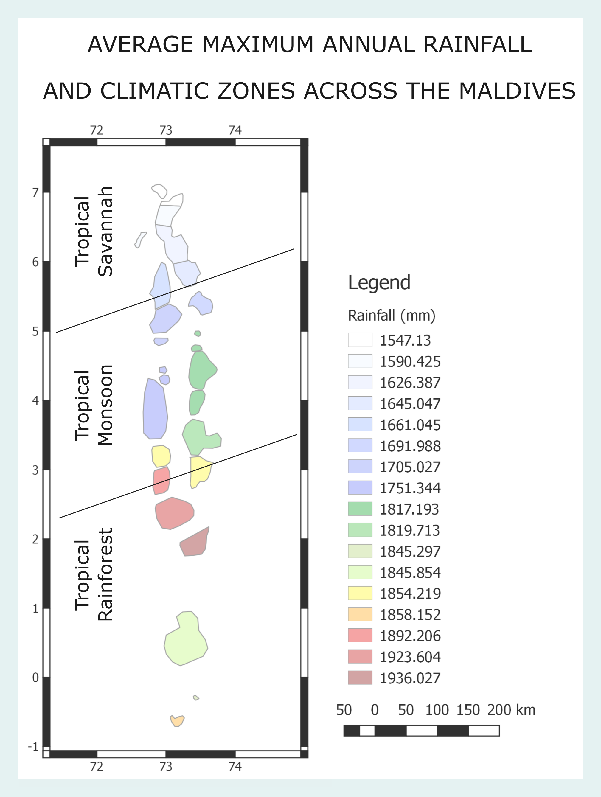

For some ideas of a detailed applicaiton of the I-Hex (Island Health Explorer) portal please see below:
Example application - Climatic Zones according to precipitation
Introduction
Rain fall across the Atolls is well understood to be influenced by the Monsoonal patterns of the South Asian Subcontinent (Zahid, 2011). Further, gauge data from MMS shows that the rainfall increases towards the South. Given that difference in rainfall patterns particularly in the tropics can give rise to the existence of different subdivisions of climactic regions, his raises a plausible question to further explore rainfall patterns across the Atolls to see if we can infer additional patterns. So lets see how we can achieve this!
Accessing the Data
To analyse rainfall data, we need access to high quality long term rainfall gauge data. However, the atolls have a few observational posts, spread across a large area. And even this data is not accessible on the public domain. It is here that we can harness the accessibility of GEE. We use the Atoll Precipitation Explorer app and it takes only a few clicks to export long term rainfall data. The app utilizes the ERA5 dataset, and we use daily aggregates of rainfall from 1980 - 2019. We export data for each atoll using the "Atoll rainfall explorer" app, which exports the data in csv format, which can be processed using your favorite data analysis tool directly. So let's see what we can do with the data.
Which months produce the most rainfall ?
As our exported csv files already contains the mean rainfall over three decades for each month across the atolls, lets plot the variance of rainfall across some of the atolls. To make things interesting we will add the monthly minimum threshold of rainfall to qualify as a "Tropical Rain Forest Climate" zone.
The plot is really intretsing as it shows that the rainfall across the Central-Southern and Southern atolls clerly indicates that these atolls experience a much shorter "dry" season and these atolls experience a "Tropical Rain Forest Climate", unlike the Nothern Atolls.
Which atoll recives the most rainfall ?
A plausible question that can be asked now is to explore the variance of total rainfall across the country. As we already have exported the csv files of the mean total rainfall across all months for each atoll it is trivial to plot the total rainfall across the country for each atoll.

The rainfall rates of each atoll plotted shows that the three atolls of the South-Central zone experience the highest rainfall, with Hadhunmathi (Laamu Atoll), experiencing the most, inline with studies such as (Zahid, 2011). Lets go one step further and classify the atolls according to the climatic zones.
Climate zones across the country
Further analysis of the rainfall paterns over the past three decades indicates three climatic zones within the country as seen below.

All of the applications are built using the google earth engine and harness various datasets available on the platform.
Becase most of the apps use satellite imagery , availibility of cloud free images is a major challenge. Evethough various methods were used to reduce the impact it remains a major challenge. Further, the temporal scale of the availibility of the images and the spatial coverage of the satellite imagery datasets across the Maldives is also a limitin factor. However, with the rapid devolopment of satellite technology we these issues will resolve over time. (We hope soon!)
The island climate explorer uses the ERA5 dataset as its base. It offers uses the exploration of climatic variables from the dataset across seperate atolls for precipitation, temperature and surface pressure. The wind explorer offers the exploration of wind vectors in a more regional setting.
The atoll geomorphology explorer uses the data from the ESA Sentinel-2 as its main source. However, because Sentinel-2 coverage does not extend to the Northern Atolls of the Maldives and also has coverage from 2017, we also use the full range of Landsat imagery ranging from Lansat1 - Landsat8 programs. Each app provides a description of how the imagery is used.
The classified imagry is derived using manually selected training points. Two apps are provided, one trained on Landsat imagery and the other on Sentinel-2 imagery. In both cases, to reduce the impact of clouds a median image is selcted across each atoll to train and classify. Because of the higher resolution the Sentinel-2 trained imagery has more classes.
The bathymetry app, provides an overview of a gridded high resolution dataset which maps the bathymetry of the Maldives, allowing detailed ocean modelling and simulation across the atolls for the first time. A low resolution version is presented here. For applications of the dataset which has already been published please refer to (Rasheed.et.al, 2021)
The atoll future scenarios explorer provides the exploration of the impact of several projected scenarios on precipitation and the temperatures across the atolls.
The experimental features section features applications which explore the use of technology in devolopment phase and requires further research.
The detection of plastic targets application uses two different indices, the Plastic Debri Index and the Plastic Index. The application showcases the application of these indices across Male' atoll. The resuts indicate that more work is required to accurately identify plastic targets and disiguish between vessels and floating debri.
The AIS Ship Tracker app provides the location of vessels across a given time period. Potential uses of this application indicate potential monitoring of travel patterns of illegal fishing vessels etc.